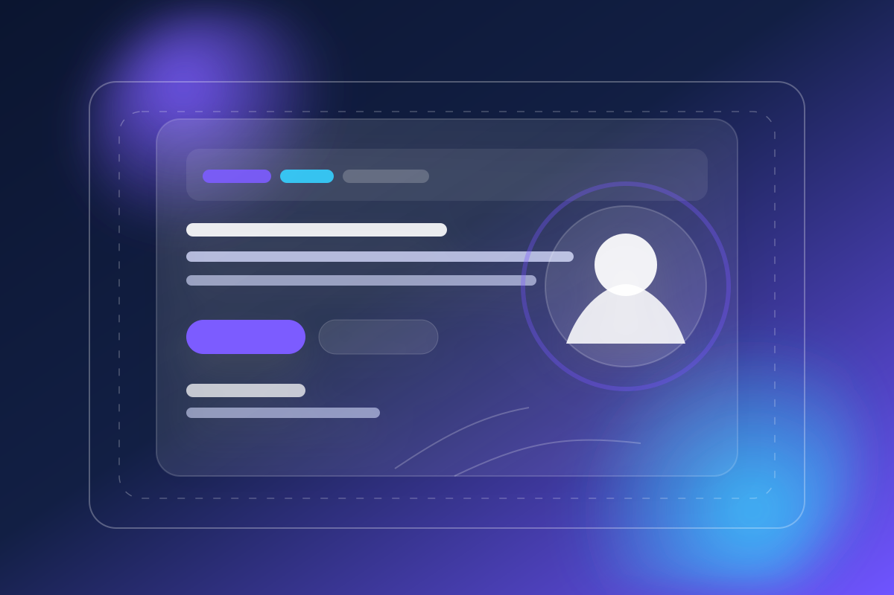

Project Detail
Studi kasus proyek portofolio: dari tujuan, proses, hingga hasil akhir yang siap dipresentasikan.
Case Study
Landing Page Portfolio

Website personal untuk memperkuat branding dan meningkatkan peluang kerja sama.
Proyek ini dibuat untuk menampilkan profil profesional, rangkaian layanan, bukti sosial, dan kontak dalam format yang ringkas namun premium.
Challenge
Pesan personal brand perlu tampil jelas dalam waktu singkat tanpa membuat halaman terasa penuh atau membingungkan.
Solution
Menggunakan hierarki visual yang tegas, section yang terstruktur, dan CTA yang konsisten di setiap titik penting.
Result
Halaman terasa lebih profesional, mudah dibaca, dan siap dipakai untuk presentasi ke recruiter maupun klien.
Discovery
Menentukan tujuan utama, target audiens, dan struktur informasi yang paling relevan.
Wireframe
Menyusun urutan section agar pengunjung bisa memahami profil dan layanan dengan cepat.
Visual Design
Menetapkan warna, tipografi, dan komponen agar branding terlihat konsisten.
Launch
Memastikan hasil akhir responsif, ringan, dan siap digunakan sebagai website portofolio.
Project highlights
- Konsisten dengan homepage portofolio
- Cocok untuk personal brand modern
- Mudah dikembangkan ke halaman lain
Ingin versi yang lebih personal?
Ganti nama, foto, link sosial, dan daftar proyek agar halaman ini langsung mencerminkan identitas Anda sendiri.